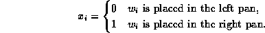
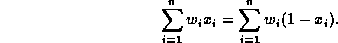
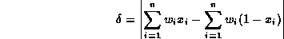
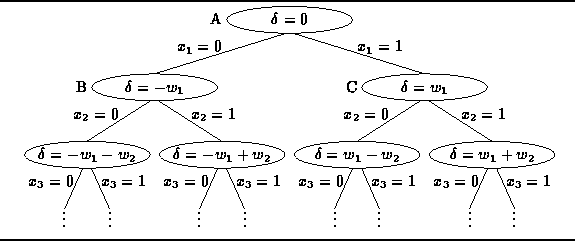
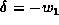
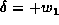

Data Structures and Algorithms
with Object-Oriented Design Patterns in C++
Data Structures and Algorithms
with Object-Oriented Design Patterns in C++
Consider the set of scales shown in Figure  .
Suppose we are given a collection of n weights,
.
Suppose we are given a collection of n weights,
 ,
and we are required to place all of the weights
onto the scales so that they are balanced.
,
and we are required to place all of the weights
onto the scales so that they are balanced.
The problem can be expressed mathematically as follows:
Let  represent the pan in which weight
represent the pan in which weight  is placed
such that
is placed
such that

The scales are balanced when the sum of the weights in the left pan equals the sum of the weights in the right pan,

Given an arbitrary set of n weights,
there is no guarantee that a solution to the problem exists.
A solution always exists if, instead of balancing the scales,
the goal is to minimize the difference between between the total weights
in the left and right pans.
Thus, given  ,
our objective is to minimize
,
our objective is to minimize  where
where

subject to the constraint that all the weights are placed on the scales.
Given a set of scales and collection of weights, we might solve the problem by trial-and-error: Place all the weights onto the pans one-by-one. If the scales balance, a solution has been found. If not, remove some number of the weights and place them back on the scales in some other combination. In effect, we search for a solution to the problem by first trying one solution and then backing-up to try another.
Figure shows the solution space
for the scales balancing problem.
In this case the solution space takes the form of a tree:
Each node of the tree represents a partial solution to the problem.
At the root (node A)
no weights have been placed yet and the scales are balanced.
Let  be the difference between the
the sum of the weights currently placed in the left and right pans.
Therefore, at node A.
be the difference between the
the sum of the weights currently placed in the left and right pans.
Therefore, at node A.

Figure: Solution Space for the Scales Balancing Problem
Node B represents the situation in which weight has been placed
in the left pan.
The difference between the pans is .
Conversely, node C represents the situation in which the weight
has been placed in the right pan.
In this case .
The complete solution tree has depth n and  leaves.
Clearly, the solution is the leaf node having the smallest value.
leaves.
Clearly, the solution is the leaf node having the smallest value.
In this case (as in many others) the solution space is a tree.
In order to find the best solution
a backtracking algorithm visits all the nodes in the solution space.
I.e., it does a tree traversal .
Section presents the two most
important tree traversals--depth-first
and breadth-first .
Both kinds can be used to implement a backtracking algorithm.
 Copyright © 1997 by Bruno R. Preiss, P.Eng. All rights reserved.
Copyright © 1997 by Bruno R. Preiss, P.Eng. All rights reserved.